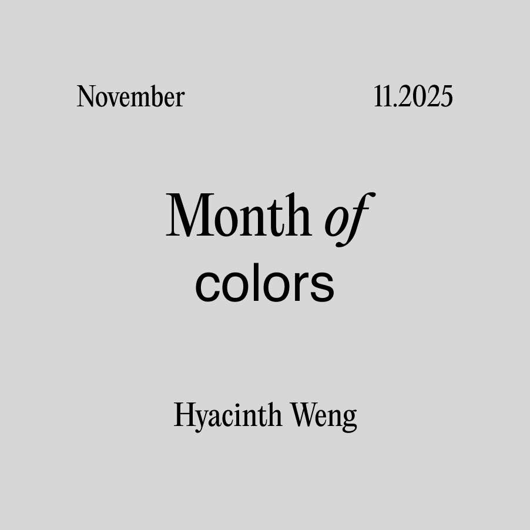
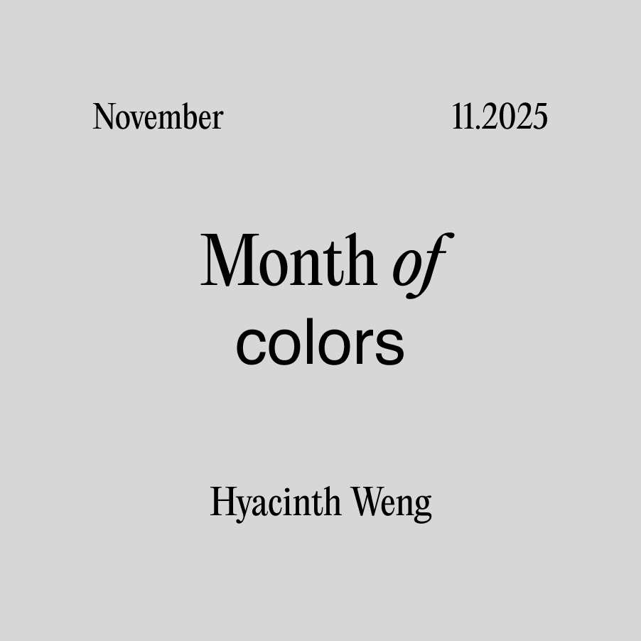

I first learned art by sketching. My elementary school art teacher taught us to draw from pictures of objects, eventually moving on to still lives of things around us. When I began planning this, sketching immediately came to mind. I haven’t seriously sat down with just a pencil and paper in years; I wanted to start the year off going back to basics.
I'd bought a tear off calendar from Muji for the new year. While contemplating what to do with the torn off pages, I found it to be the perfect medium for a daily sketch. With a new page every day, the date stamped cleanly and unchangeably, I have exactly twenty four hours time with it before it loses value.


 
